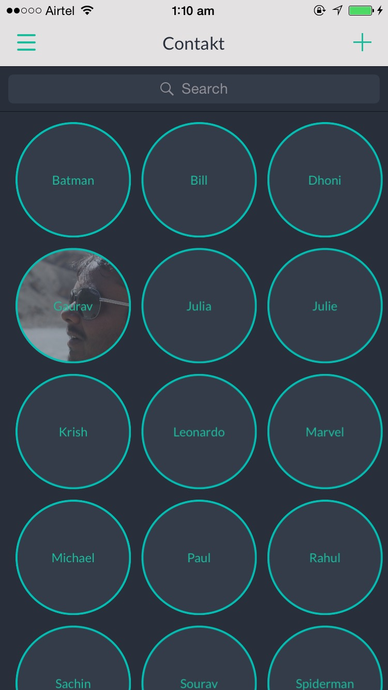

-
Profile
ContaktMe is your new networking application which takes the pain out of contact sharing when you meet someone new at an event. You start with creating your profile
-
Connect
Then, you attach your networks which you want to share. This is just a one time effort. ContaktMe would generate a QR code from this information.
-
Scan
When you want to share your information, just ask the person to scan your QR code through ContaktMe application.
-
Contacts
When you want to get someone's information, tap the '+' button on homescreen to scan his QR code.
 -
Follow
A scan would make you instantly follow him across all his shared networks.
ContaktMe